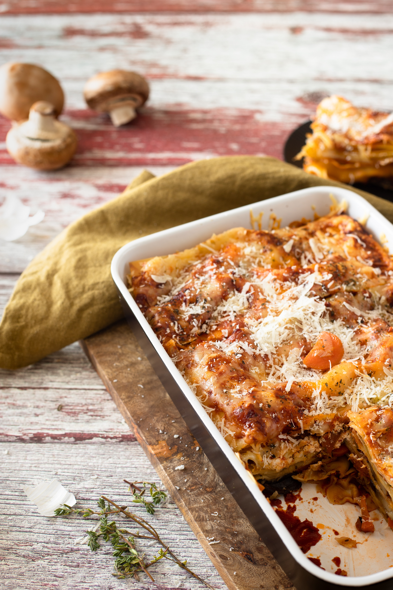

Vegetarian Lasagna

Adorable vegetarian lasagna
Photo by Jeremy Bishop on Unsplash
This hearty and delicious vegetarian lasagna is the ultimate comfort food. Layers of tender lasagna noodles, savory tomato sauce, and rich and creamy cheese come together to create a dish that is both satisfying and wholesome.
Whether you're looking for a satisfying dinner to share with friends and family or just want to indulge in a comforting and delicious meal on a cozy night in, this vegetarian lasagna is the perfect choice. So grab your ingredients and get ready to savor the delicious flavors of this classic Italian dish with a healthy and vegetarian twist!
Ingredients:
- Lasagna noodles
- Beyond Meat Burger
- Oil
- Marinaro sauce
- Butter
- Flour
- Milk
Steps:
- Heat the vegetable oil in a pan and fry the patty on it for five minutes, stirring constantly.
- Add marinara sauce to the minced meat.
- Mix everything well, reduce the heat to medium, and stew the meat covered for about 10 minutes.
- While the meat is stewing, prepare the béchamel sauce. To do this, melt the butter in a saucepan over low heat.
- Add flour and, continuously stirring with a whisk, lightly fry it in the melted butter.
- Gradually pour in the milk, continuing to mix the mass with a whisk so that no lumps form. Bring the mixture to the consistency of thick cream, remove from the heat and cool.
- Grease the bottom of a baking dish with vegetable oil or cover with baking paper. Pour the bottom with the béchamel sauce.
- Arrange the lasagna sheets as the first layer. If you are using a small dish in which it is difficult to fit a dry sheet, then it is better to keep the sheets in boiling water for about 2-3 minutes. This will make them soft and pliable, and you can easily lay them in any shape, trimming the excess edges with a knife. Pour the sheets with sauce again.
- Arrange the minced meat as the next layer.
- Pour the meat with sauce. Lay out the layers like this until the dish is filled. The last layer with the sheets should be very well poured with sauce, especially the edges, otherwise there is a risk that the pasta sheet will dry out and burn during cooking.
- Send the lasagna to a preheated oven at 190-200 degrees for 30-35 minutes. Keep in mind that an appetizing golden crust should form on the lasagna. Remove the finished dish from the oven and let it stand for about 10 minutes. Cut the lasagna into portions and place on plates. Serve hot. Enjoy your meal!